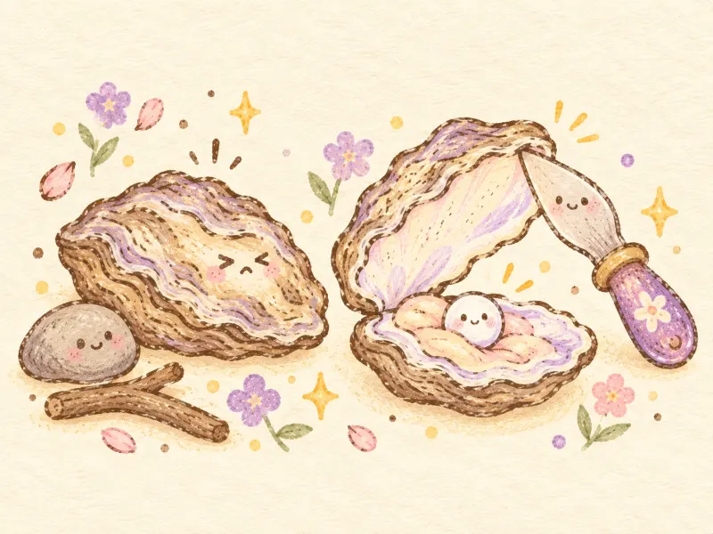
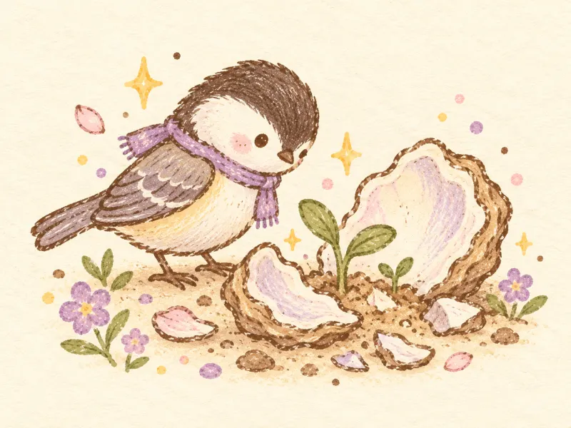
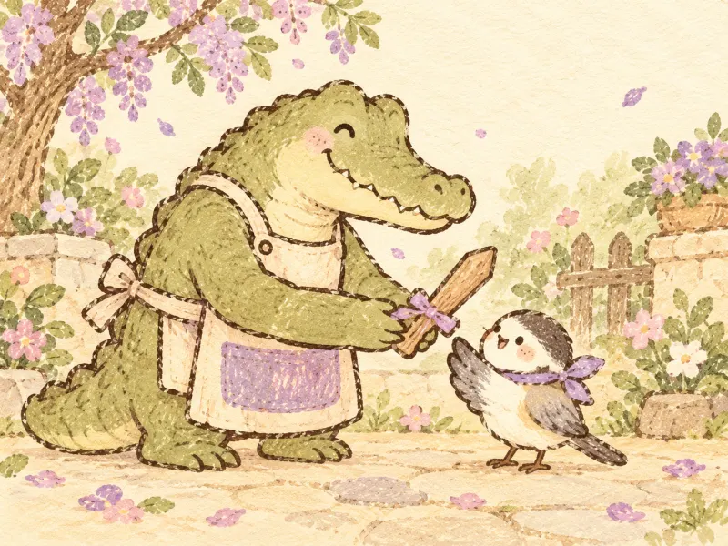
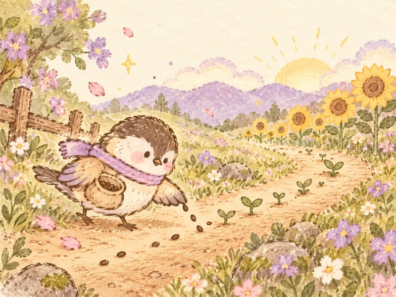
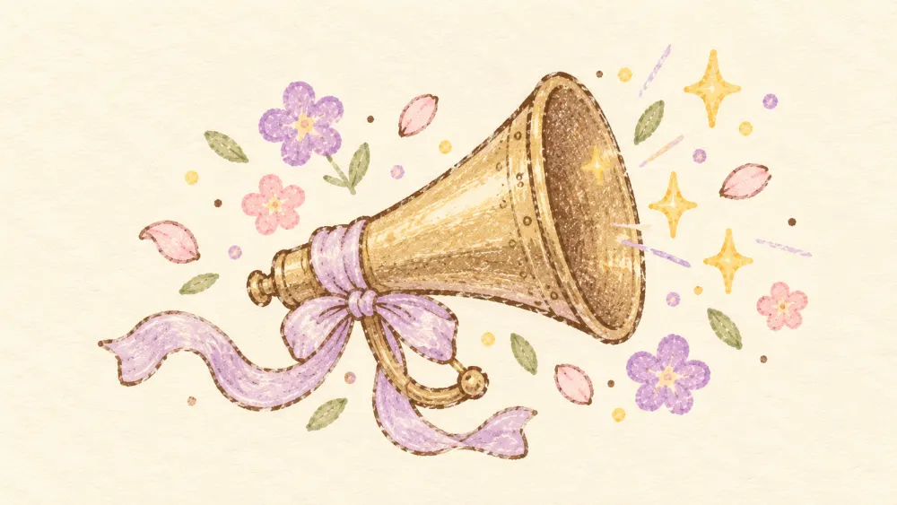
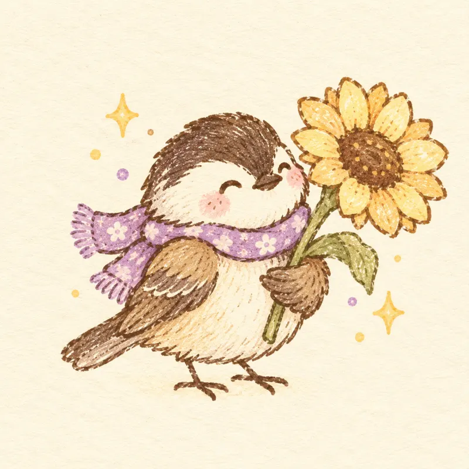

石头、棍棒砸不开牡蛎，但是一把小刀轻松打开了它。
带壳的牡蛎是大人的心脏
点一下，试试打开它
01 / 序章

石头、棍棒砸不开牡蛎，但是一把小刀轻松打开了它。

有时候想「在破碎之后，我们如何重建生活？」
哎呀，复盘生活也是需要勇气的！你已经很勇敢了。

师傅说：「你已经是武林第一高手了，去过平凡人的生活吧！」

记录、创作、构建，就像沿路播下的种子。开出向日葵花道，未来带来特别的意义与惊喜。
02 / 爱与梦
像把纸片一张张收进抽屉。照片还在慢慢添进来。
03 / 一封邀请信
邀请你前来
共同庆祝新岁！
04 / 我们见面吧
可以多选，也可以只来一场。
05 / 留一句话

在今天十二点之前，用祝福喇叭说出的祝福都会变成真的。
